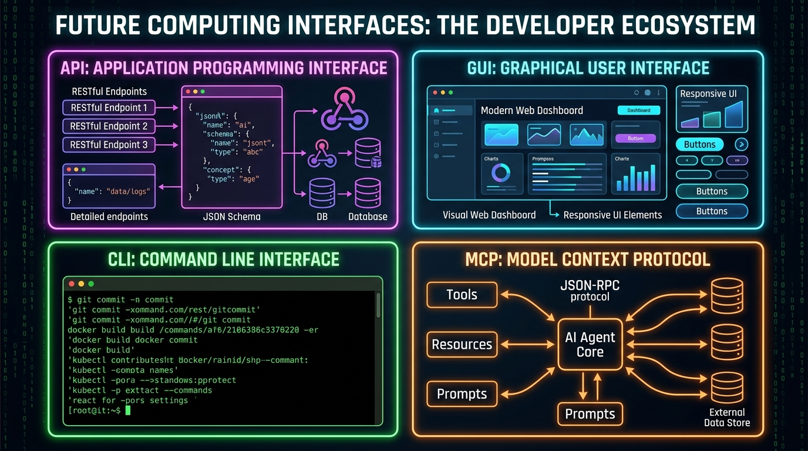

In computer science, an interface is fundamentally a shared boundary across which two separate systems exchange information. Over seventy years of computing history, human-computer and machine-to-machine interactions have been shaped by four major interface paradigms: the Command Line Interface (CLI), the Graphical User Interface (GUI), the Application Programming Interface (API), and most recently, the Model Context Protocol (MCP).
While CLI, GUI, and API transformed command execution, human visual interaction, and programmatic software integration, the explosion of non-deterministic Artificial Intelligence models created a missing link: How do autonomous AI agents seamlessly query dynamic enterprise state, inspect live systems, and execute complex tool chains without brittle custom glue code?
Enter MCP (Model Context Protocol)—the open standard that serves as the 4th pillar of modern computing interfaces.
CLI Terminal Stream
Consumer: Human Experts & Shell Scripts
Text-in / text-out streams, UNIX pipes, flags, and deterministic character execution.
GUI Visual Workspace
Consumer: Human End-Users
Spatial graphics, direct manipulation, visual affordances, WIMP, and event listeners.
API Software Contract
Consumer: Machine Code & Apps
Structured JSON/Protobuf schemas, REST/gRPC endpoints, and strict programmatic contracts.
MCP AI Context Protocol
Consumer: LLM Agents & AI Hosts
Standardized JSON-RPC 2.0 dynamic tool discovery, resource subscriptions, and prompt templates.
1. Command Line Interface (CLI): The Unix Philosophy
The Command Line Interface (CLI) represents the oldest interactive model in software. Built on the core UNIX philosophy—"Do one thing and do it well, and work together through text streams"—the CLI relies on character streams (stdin, stdout, stderr).
Core Mechanics
In a CLI, execution is text-based and synchronous or asynchronous command invocation. The user or script passes positional arguments and flags (e.g., --output=json or -vf) to an executable binary.
# Concatenating, filtering, and counting active HTTP sessions via CLI pipe
cat /var/log/nginx/access.log | grep "200 OK" | awk '{print $1}' | sort | uniq -c | sort -nr | head -n 10Strengths & Limitations
- Compositional Power: Unix pipes allow developers to stitch arbitrary tools together in real-time without modifying source code.
- Scriptability & Speed: Extremely light memory footprint, zero visual rendering overhead, ideal for remote SSH management and CI/CD pipelines.
- High Cognitive Barrier: Flags, commands, and options must be memorized or looked up; zero visual discoverability.
2. Graphical User Interface (GUI): Visual Affordance & Direct Manipulation
Pioneered at Xerox PARC and popularized by Apple and Microsoft, the Graphical User Interface (GUI) shifted computing from abstract syntax parsing to spatial mental models (Windows, Icons, Menus, Pointer - WIMP).
Core Mechanics
GUIs replace character streams with event loops, scene graphs, and DOM rendering engines. Instead of typing commands, the user interacts with visual affordances (buttons, sliders, input fields) that emit events handled by state reconciliation engines (e.g., React, Vue, SwiftUI).
// Visual affordance state reconciliation in GUI architecture
const submitBtn = document.getElementById('deploy-btn');
submitBtn.addEventListener('click', async (event) => {
event.preventDefault();
submitBtn.disabled = true;
submitBtn.innerText = 'Deploying Cluster...';
await triggerDeployment();
showSuccessToast("Cluster successfully provisioned!");
});Strengths & Limitations
- Universal Accessibility: Immediate visual discoverability. Users don't need to know syntax; visual elements explain their own purpose.
- High Overhead & Automation Friction: Programmatic GUI automation requires visual computer vision, DOM scraping, or fragile UI coordinate clicks that break easily when layouts change.
3. Application Programming Interface (API): Software-to-Software Contracts
As applications became distributed across servers, clouds, and microservices, software systems required a structured mechanism to communicate with each other without human intervention. The Application Programming Interface (API) established deterministic programmatic contracts.
Core Mechanics
APIs enforce explicit schemas using protocols like REST (HTTP + JSON), gRPC (HTTP/2 + Protocol Buffers), or GraphQL. Unlike CLI text streams or GUI rendering trees, APIs transfer typed, structured data objects.
// HTTP POST /api/v1/deployments
{
"service": "authentication-service",
"replicas": 5,
"environment": "production",
"healthCheck": {
"path": "/healthz",
"intervalSeconds": 10
}
}Strengths & Limitations
- Strict Schemas & Type Safety: Clear boundaries enable predictable microservice communication and web scalability.
- Rigid Integration Requirements: Client code must explicitly handle specific API routes, headers, and payload structures. If an API endpoint signature changes, client application code breaks.
4. Model Context Protocol (MCP): The Universal AI Agent Standard
With the rise of Large Language Models (LLMs) and autonomous AI coding agents (such as Antigravity, Claude, Cursor, and custom agentic frameworks), computing encountered a brand-new interface challenge:
Created to solve this exact bottleneck, Model Context Protocol (MCP) is an open standard initially created by Anthropic and transferred to the Agentic AI Foundation (AAIF) under the Linux Foundation—co-sponsored by industry leaders including Anthropic, OpenAI, Google, Microsoft, AWS, and Block. MCP standardizes how AI applications (MCP Clients / Hosts) securely connect to data sources, local filesystems, database instances, enterprise platforms, and external APIs (MCP Servers).
Unified Architecture: How MCP Bridges Systems
(GUI Interface)
(LLM Core)
(Tools & Resources)
(Database / System)
The Three Primitives of MCP
MCP defines three core primitives that an MCP Server exposes to an AI Client over standard streams (stdio) or HTTP/SSE using JSON-RPC 2.0:
- Resources: Passive read-only data sources (file contents, logs, system specs, database rows) identified by standardized URIs (e.g.
file:///logs/app.logorpostgres://users/schema). - Prompts: Pre-engineered contextual prompt templates and reusable instruction workflows that users or agents can launch with parameters.
- Tools: Executable side-effect operations (file creation, SQL execution, git operations, terminal commands, web API requests) complete with JSON Schema input declarations that the LLM can auto-invoke.
Key Protocol Evolution & Specification Milestones
As MCP rapidly grew into the de facto standard across millions of developer environments, the specification evolved to address enterprise scalability, security, and rich user experiences:
- Stateless Protocol & Horizontal Scale: Recent spec releases transitioned MCP toward stateless request handling by removing mandatory initial session handshakes (`initialize`), allowing MCP servers to scale horizontally behind standard round-robin load balancers without complex session pinning.
- OAuth 2.1 Security & Conformance: Integrated enterprise authorization models (OAuth 2.1 / OIDC) and strict JSON Schema validation to guard against prompt injection and tool-poisoning vectors.
- MCP Apps & Extension Framework: Support for server-rendered UI widgets ("MCP Apps") embedded inside chat interfaces, alongside an extensions framework for asynchronous long-running background tasks.
Annotated MCP Tool Declaration & Execution
The code below demonstrates how an MCP Server defines a tool schema using the official SDK, allowing an LLM to dynamically inspect the tool's signature and invoke it safely:
import { Server } from "@modelcontextprotocol/sdk/server/index.js";
import { ListToolsRequestSchema, CallToolRequestSchema } from "@modelcontextprotocol/sdk/types.js";
// Instantiate standard MCP Server with tool capabilities
const server = new Server(
{ name: "database-mcp-server", version: "2.0.0" },
{ capabilities: { tools: {} } }
);
// 1. Expose Tool Schemas to the AI Agent via JSON-RPC
server.setRequestHandler(ListToolsRequestSchema, async () => ({
tools: [
{
name: "query_database",
description: "Execute a read-only SQL query against the enterprise warehouse",
inputSchema: {
type: "object",
properties: {
sql: { type: "string", description: "SQL SELECT statement to run" }
},
required: ["sql"]
}
}
]
}));
// 2. Handle Dynamic Tool Invocation from the LLM
server.setRequestHandler(CallToolRequestSchema, async (request) => {
if (request.params.name === "query_database") {
const queryResult = await db.query(request.params.arguments.sql);
return {
content: [{ type: "text", text: JSON.stringify(queryResult) }]
};
}
});5. The Agent's Dilemma: Why AI Agents Often Prefer CLI over MCP
While MCP provides a standardized framework for exposing external tools to Large Language Models, leading AI coding agents (such as Antigravity, Cursor, and Claude Code) frequently favor direct Command Line Interfaces (CLI) over specialized MCP servers for core developer workflows. Why is a 50-year-old text interface outperforming modern protocol schemas in agentic runtime benchmarks?
CLI Advantage Token & Prompt Efficiency
An agent equipped with a single bash tool needs minimal system prompt instructions. In contrast, loading 10+ MCP servers forces thousands of JSON Schema tokens into the prompt context window before execution even starts.
CLI Advantage UNIX Compositional Velocity
Via CLI, an agent can pipe commands in a single turn: grep -r "auth" . | awk '{print $1}' | sort | uniq -c. With MCP, performing the same task requires multiple sequential LLM round-trips across separate tool invocations.
MCP Advantage Bounded Safety & Sandboxing
Arbitrary CLI execution runs the risk of destructive system commands (e.g. accidental rm -rf). MCP strictly bounds the agent to pre-approved, safe function calls with typed inputs.
MCP Advantage Enterprise & Cloud APIs
For systems lacking local terminal binaries—such as querying Postgres databases, Slack channels, or Jira boards—MCP provides structured JSON-RPC connections without complex shell wrappers.
Deep Dive: CLI vs. MCP Trade-Offs for AI Systems
- Zero Setup vs Server Maintenance: Terminal binaries (
git,curl,jq,docker) are omnipresent on developer OS environments. MCP requires hosting, configuring transport connections (stdio/SSE), managing background processes, and keeping server schemas in sync. - Arbitrary Problem Solving: If an agent needs to diagnose system memory or network sockets, an MCP-only agent fails if no
inspect_memorytool exists. A CLI-enabled agent simply runsfree -morlsof -i. - Output Parsing Overhead: While CLI returns raw text streams that require LLM parsing, MCP guarantees typed, structured JSON payloads. This makes MCP far superior for structured database operations and financial transactions.
6. Comparative Analysis: CLI vs GUI vs API vs MCP
To understand where each interface excels, let's contrast them across key engineering dimensions:
| Dimension | CLI | GUI | API | MCP |
|---|---|---|---|---|
| Primary Consumer | Human Developers / Scripts | Human End-Users | Software / Programs | LLM Agents / AI Hosts |
| Data Format | Unstructured / Structured Text | Visual Pixels / DOM Tree | JSON / XML / Protobuf | JSON-RPC 2.0 Context & Schemas |
| Discoverability | Low (Help flags / man pages) | High (Visual affordances) | Medium (OpenAPI / Swagger specs) | High (Dynamic runtime schema introspection) |
| Execution Paradigm | Deterministic commands | Event-driven user actions | Deterministic HTTP / RPC calls | Probabilistic LLM tool reasoning |
| Automation Effort | Low (Shell scripting) | High (Screen scraping / Selenium) | Low (SDKs / HTTP clients) | Zero-shot (Agentic self-orchestration) |
| State Model | Process exit codes / Pipes | Component & UI Render state | Stateless / Session tokens | Context window & tool feedback loop |
7. The Convergence & Future of Interfaces
The history of computing is not a story of replacement, but of layering and abstraction:
- CLI did not eliminate bare-metal machine code; it wrapped it in text commands.
- GUI did not replace CLI; it provided a visual layer over underlying system calls.
- API did not destroy GUIs or CLIs; it enabled applications to communicate over networks.
- MCP does not replace APIs or CLIs; it exposes APIs, CLI binaries, and local data stores directly into the reasoning engine of AI agents.
We are now entering an era of Generative Interfaces, where humans communicate with AI agents using natural language (CLI-like ease with human intuition), the AI agent uses MCP to discover and execute underlying APIs and CLI utilities, and dynamically renders tailored GUIs on the fly for human review.
Understanding all four pillars—CLI, GUI, API, and MCP—is now essential knowledge for every modern systems engineer and AI developer.